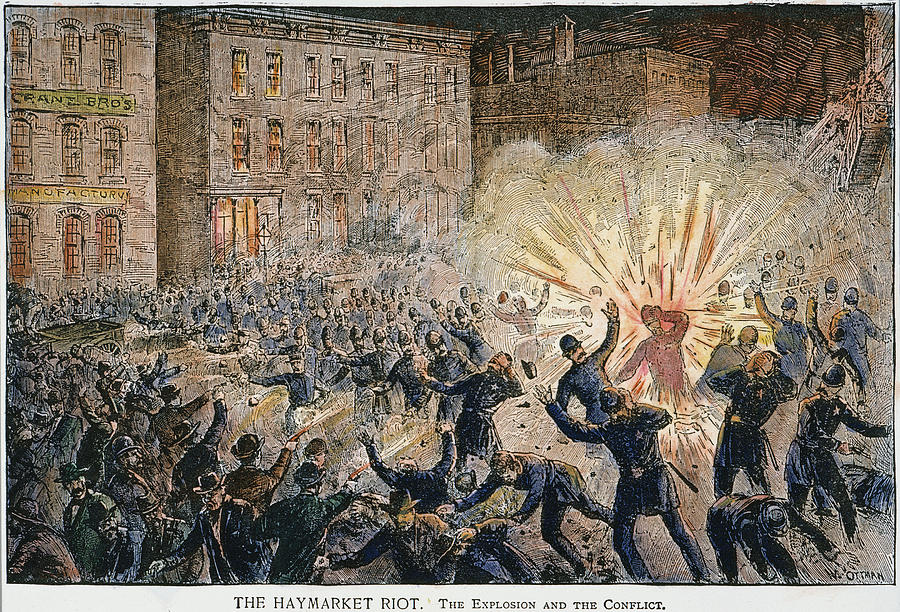

Shows run Saturday nights April 30th, May 7th, May 14th and May 21st, May 28th, with special performance on Wednesday May 4th 2016, not to be forgotten.
On May 4, 1886, Chicago was rocked by the first dynamite bomb thrown in America, America's first Red Scare, and the first time people were tried for Conspiracy to Commit Murder without having ever caught the bomb thrower.
This epic period piece deals with everything from the struggle for the eight hour workday, the plight of the immigrant, interracial marriage, a corrupt Justice system, police brutality, the origin of May Day, the concentration of wealth in a few hands, and an utter disregard of the Constitution of this land.
Come be a part of this revolutionary theatrical performance!
In Bloody Haymarket the audience is not only witness to events surrounding the tragedy but is also encouraged to actively participate in this riveting part of Chicago history all should know. Bloody Haymarket is a full sensory experience! Join us for the 130th anniversary of the Haymarket Affair.